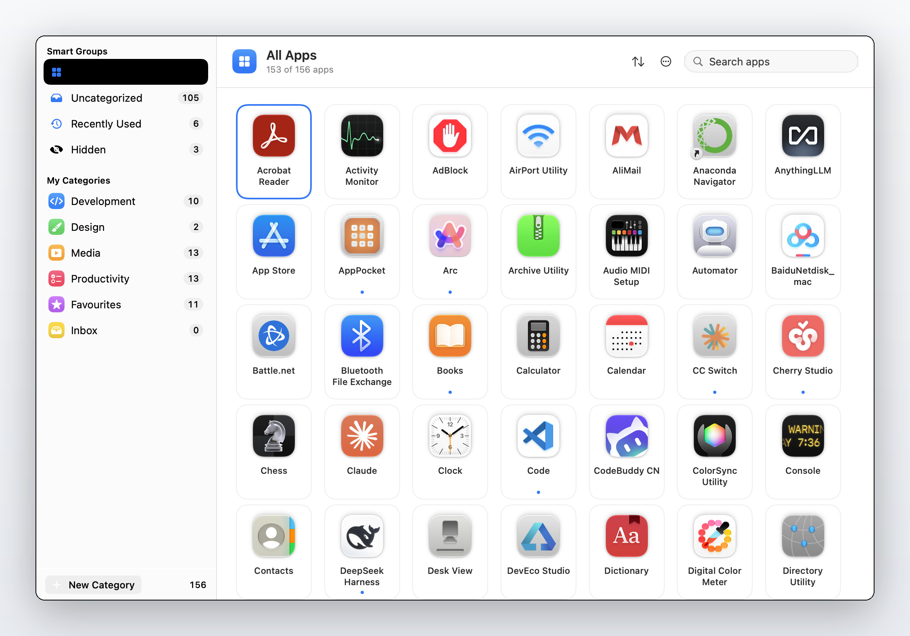
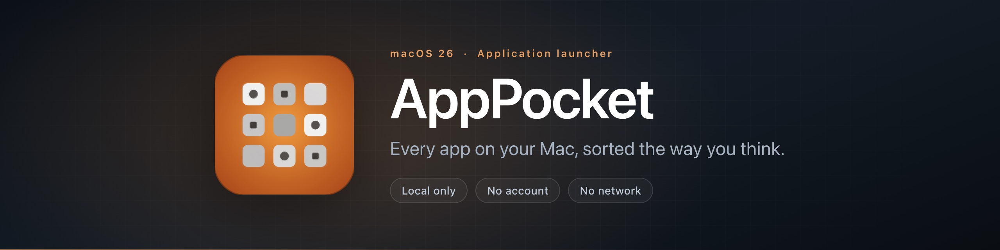

全部已安装应用
覆盖 /Applications、/System/Applications、/System/Library/CoreServices/Applications 与 ~/Applications，显示真实图标。
macOS 26 · 应用启动器
把 Mac 上的每个应用，按你的想法归类。
一个只在你这台机器上运行的应用启动器——macOS 26 里 Launchpad 已经不在了。
没有账号、不联网、没有数据统计、没有第三方依赖：它读 Info.plist，写一个 JSON 文件。

点击放大Features
一个启动器该做的事，做好做透；其余一概不做。
覆盖 /Applications、/System/Applications、/System/Library/CoreServices/Applications 与 ~/Applications，显示真实图标。
实时计算而非存储：全部应用、未分类、最近使用、已隐藏。数字永远是准的。
名称、SF Symbol 图标、颜色，加一份可排序的成员列表。新建、编辑、重命名、复制、拖拽排序、删除。
把图标拖到侧栏的分类上、用图标的右键菜单，或者在多选操作栏里批量归到某个分类。
是打分排序，不是简单的子串过滤。打 Xcode 的前几个字母就能排到前面。
菜单栏图标常驻，还能设一个全局快捷键随时唤起。⌘W 收起后应用仍在菜单栏运行。

Interface
没有多余的装饰，信息密度优先。以下截图来自真实运行中的应用。

所有已安装的应用都在一个网格里，左侧是四个实时计算的智能分组和你自己建的分类。图标下方的小圆点，表示这个应用正在运行。

一个分类由名称、SF Symbol 图标、颜色和一份可排序的成员列表组成。右侧这一栏就是勾选应用的地方，也是多选操作栏批量归类时的目标。
Local only
这个应用没有任何能力把你的信息发出去——它压根不联网。所有状态就是磁盘上一个 JSON 文件，原子写入。
# 这一个文件，就是 AppPocket 知道的全部
~/Library/Application Support/AppPocket/
└── library.json
# 想备份？复制它就行
$ cp ~/Library/Application\ Support/AppPocket/library.json ./backup.json
# 它不联网，所以这些都不会发生
# ✗ 遥测上报 ✗ 账号登录 ✗ 云端同步Keyboard
手不用离开键盘就能启动、选择、归类。
| 操作 | 方式 |
|---|---|
| 启动应用 | 单击图标 |
| 启动并保持启动器打开 | ⌥ + 单击 |
| 多选 | ⌘ + 单击逐个选择，⌘A 全选 |
| 键盘移动焦点 | ↑↓←→ 移动，⏎ 启动，esc 清除 |
| 新建分类 | ⌘N，或侧栏底部的 + |
| 编辑当前分类 | ⌘E |
| 搜索 | ⌘F |
| 重新扫描新装应用 | ⌘R |
| 跳到智能分组 | ⌘1 – ⌘4 |
| 跳到某个分类 | ⌘5 – ⌘9 |
| 撤销 | ⌘Z（30 步） |
| 收起启动器 | ⌘W —— 应用仍在菜单栏运行 |
Download
当前版本 v1.0.0。也可以从发布页面查看完整的历史版本。
点上面的下载按钮，拿到 AppPocket-1.0.0.dmg。
打开磁盘映像，把 AppPocket 拖到 Applications 快捷方式上即可。
打开系统设置 → 隐私与安全性，在 AppPocket 的提示旁点「仍要打开」。macOS 14 及更早版本上，右键点击应用选择「打开」效果相同。
这个构建是 ad-hoc 签名、未经公证的——背后没有付费的 Apple 开发者账号。所以 macOS 要么拒绝首次启动，要么把它放进一个随机的只读副本里运行。
这是 Gatekeeper 在尽它的职责，不代表应用本身有问题。如果你不愿意信任一个无法验证的二进制文件，可以自己构建：需要 macOS 14.0+ 与 Xcode 26 或更高，没有需要解析的依赖包。
想跳过图形界面的话，清掉下载附带的隔离标记就行：
xattr -dr com.apple.quarantine /Applications/AppPocket.app
FAQ
macOS 26 里 Launchpad 已经不在了。AppPocket 填的就是这个位置：一个把「所有应用」和「你的分类」放进同一个网格的启动器。它是本地优先的——没有账号、不联网、没有数据统计、没有第三方依赖。
不会。应用不发起任何网络请求。全部状态就是 ~/Library/Application Support/AppPocket/library.json 这一个文件，原子写入。设置 → 数据里有导出与导入，方便你自己留备份。
macOS 14.0 或更高。发布的是通用二进制，Apple 芯片和 Intel 机器都能跑。
因为这个构建是 ad-hoc 签名、未经公证的——这是一个没有注册开发者账号的开源项目能做到的诚实天花板。Gatekeeper 对一个没人签名的构建发出警告，是它在正常工作。
解法在上面的安装步骤里。你也可以自己从源码构建，得到一个完全可验证的产物。
按应用包标识（bundle identifier），不是路径，所以在文件夹之间挪动应用不会让它从分类里消失。若某个应用包没有声明标识，才退回使用路径。
开启沙箱后 ~/Applications 无法读取，homeDirectoryForCurrentUser 也会落在应用容器内——也就是说，沙箱版本做不了这个应用存在的唯一理由。Hardened Runtime 仍然开启。代价是按现状无法上架 Mac App Store，这一点在项目的设计文档里写得很明白。
六种：English、简体中文、日本語、Deutsch、Français、Español。应用会跟随系统语言。
MIT 许可证，都可以。项目里有 86 个单元测试覆盖分类增删改查、扫描过滤、搜索打分等逻辑，改动有底。源码与构建方式见 GitHub 仓库。